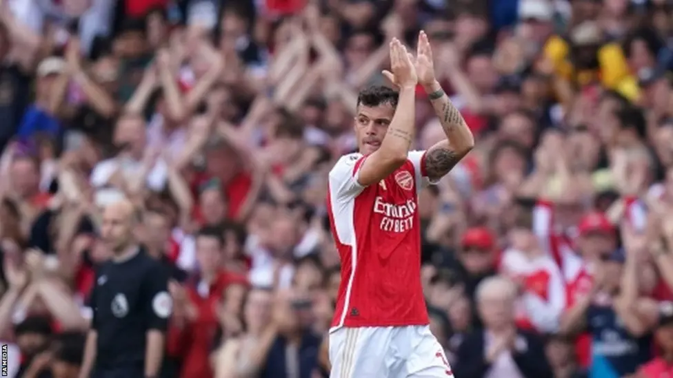

Lojtari i kombëtares zvicerane Granit Xhaka kaloj nga ekipi gjigand anglez Arsenal ne Gjermani tek Bayer Leverkusen per 21.4 Milion £. Zvicerani nenshkroi marrveshje per 5 vite. Në nivel kombëtar, Xhaka ka vazhduar të jetë një figurë udhëheqëse për Zvicrën. Ai udhëhoqi ekipin në çerekfinalet e Kampionatit Evropian 2024 në Gjermani dhe u shpall futbollisti i vitit në Zvicër për herë të tretë radhazi.